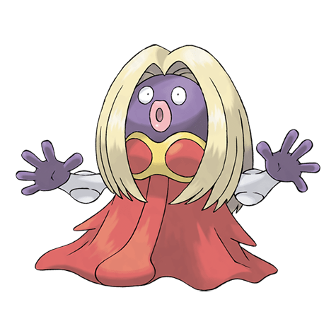

Назад
Джинкс

Джинкс — Покемон 1 поколения под номером 124 в Покедекс. Обитает он в регионе Канто и относится к Психическому и Ледяному типу. Джинкс перемещается будто под ритм танца, покачивая и встряхивая бёдрами. Движения этого Покемона настолько привлекают людей, что те тоже начинают покачивать бёдрами, не задумываясь о том, что они делают.
Тип:
Психический
Ледяной
Эволюция
# 124 Джинкс